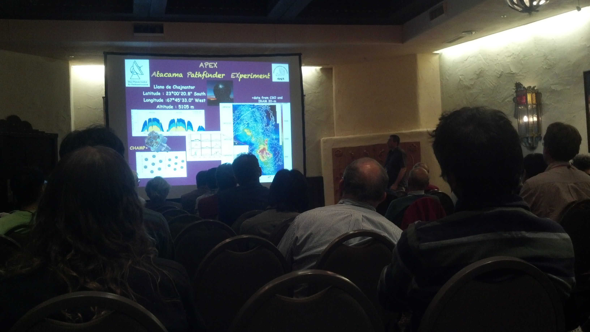

- Data from many sources
- IRAM, APEX, Herschel
- SOFIA now: FORCAST & GREAT
- CO SED
- Measure up to CO 21-20
- Model with LVG
- Needs multiple components
- but no high-density components
- HNC/HCO+
- Mills et al, 2013... on arxiv tomorrow
- Vibrationally excited H3CN
- RADEX -> n~10^5.3-6.5
- most of CND not tidally stable
- High temperatures (120-150K) required to excite vibrationally excited gas
- Many works indicate CND not stable
- [Lacy indicated: doesn't need to be gravitationally stable; is formed by shear]
- Betsy proposing HCN ladder with ALMA
Questions
- Q: If densities below Roche densities, maybe clumps are not virialized but they contain virialized cores.
- A: In very close...
- Q: Model - black hole compresses clumps when they get closer to BH